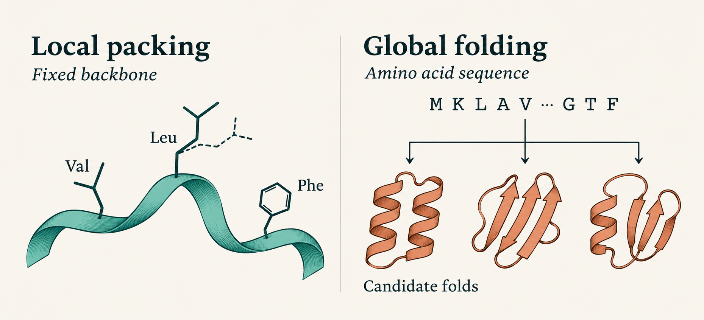
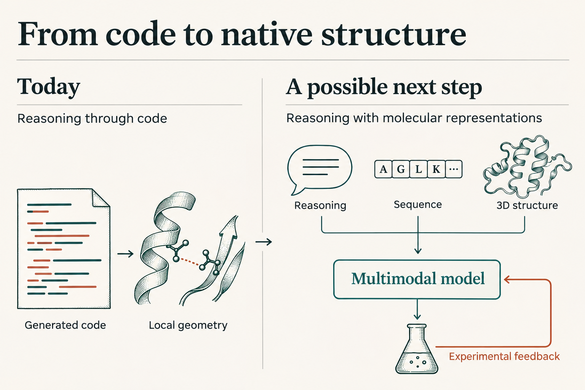

GPT-6 designs minibinder backbones that score higher on interface quality than those designed by RFdiffusion, with a mean global ipTM of 0.697 versus 0.634. Yet when predicting a monomer’s fold, GPT-6 achieves a TM-score of 0.38, compared with 0.928 for ESMFold2. Both comparisons come directly from OpenAI and Onava’s protein-biology report.
Yet what underlies this discrepancy? My read is that GPT-6 is not a biologist. It is a computational physics engineer with a Python interpreter. It wins whenever a protein problem can be turned into geometry, an explicit parameterization, and a numerical search it can code up. On the other hand, it loses whenever structure has to be inferred rather than constructed.
01 / The tool boundaryThe “no specialist tools” rule still gives prior.
Why count RDKit as a basic tool and draw the line at Rosetta? In the docking experiment, GPT could use RDKit to turn a SMILES string into plausible 3D shapes for a ligand and then refine those shapes with MMFF. The authors treated that as input preparation. I can see why. If you want to find out whether GPT can dock a molecule, making it build a conformer generator first is a long detour.
Rosetta, in contrast, falls outside the permitted protein-modeling toolset. The model must implement the relevant search and scoring procedures itself.
But even “input preparation” brings quite a bit of chemistry with it. MMFF is a parameterized force field. When it refines a molecular conformation, its parameters already encode assumptions about which shapes are physically plausible. GPT can work without a pretrained protein model and still benefit from the scientific knowledge built into the software it’s allowed to use.
I’d love to read the “mini-Rosetta” GPT writes. Its scoring function would show how it handles directional hydrogen bonds, steric clashes, and dihedral preferences. Its annealing schedule would show how it searches for a good solution.
On the practical side, I also wonder what we gain by having GPT write a fresh solver for each problem. How does the cost of generating and running a “mini-Rosetta” compare with the cost of running Rosetta on the same inputs? Writing new code each time adds cost, and there’s no guarantee it will match Rosetta’s accuracy.
02 / Geometry vs. foldingGPT wins on constrained geometric task.
GPT does best when a starting structure or a well-chosen set of variables narrows the search. Predicting an entire fold from sequence is harder. The model has to infer the protein’s overall topology, including how regions far apart in the sequence fit together in 3D.
Why side-chain packing is the ideal problem
With the backbone fixed, the code only has to choose a few side-chain torsion angles for most residues. Those angles tend to cluster around preferred combinations called rotamers, which narrows the search further. The code can then score candidate arrangements by penalizing steric clashes and rewarding favorable hydrogen-bond geometry. That makes the search much smaller than predicting an entire fold from sequence. This approach also builds on a long history of computational packing methods, including SCWRL4 and Rosetta Packer.
GPT and FlowPacker-4 achieved nearly identical median side-chain RMSDs: 0.55 Å for GPT versus 0.56 Å for FlowPacker-4. FlowPacker-4 was more accurate on both torsion-angle metrics. GPT’s mean absolute error was 31.2°, compared with 28.4° for FlowPacker-4. GPT also predicted 67.5% of angles within 20° of the reference value, compared with 71.2% for FlowPacker-4.
How packing helps with inverse folding and docking
Some of the same geometric checks that make side-chain packing tractable also help with inverse folding and docking. In inverse folding, GPT starts with a backbone and proposes a sequence that could fit it. In the reasoning examples, it recognizes secondary-structure arrangements, suggests plausible protein families, and uses those clues to narrow its sequence choices. It then writes code to check them. Placing a virtual Cβ atom, for example, can reveal where a proposed side chain would clash with the backbone. In other examples, GPT writes its own scoring function and tests how well it recovers known residues held out for evaluation.
Docking draws on a similar idea. Given two structures, GPT can search for orientations that bring their surfaces together and score the resulting contacts. Here, both partners are already in their bound conformations, which makes the search easier than docking two flexible partners. Across both tasks, the traces show how GPT builds a solver around the information it is given. How much of its performance comes from packing, motif recognition, or sequence patterns learned during training remains open.
For inverse folding, that leaves a deeper question. A sequence may fit the target backbone. What makes it prefer that backbone over the alternatives? Favoring the intended structure is positive design. Disfavoring competing folds, off-target interactions, or aggregation-prone states is negative design. Local packing scores can help with the first. GPT’s weak performance on global folding leaves open how reliably it can address the second question.
The authors therefore used ESMFold2 to check whether GPT’s proposed sequences were predicted to fold back into the intended structures. The fraction that passed varied widely. Among minibinder designs, pass rates ranged from 1.1% for IL-7Rα to 79.3% for PD-1. In therapeutic-antibody redesign, they ranged from 0.14% for finotonlimab to 50.5% for tislelizumab. These in silico screens reveal how strongly the yield depended on the starting family under the same verifier. Whether the sequences actually preferred the intended fold over competing states remains an experimental question.

Why building a binder is easier than folding a monomer
The apparent paradox is that GPT can design promising minibinder backbones while remaining poor at predicting a monomer’s fold. The latest internal model’s monomer TM-scores are about 0.38 on PDB and 0.25 on AFDB, compared with 0.928 and 0.796 for ESMFold2. Yet its reported mean global ipTM in protein-target minibinder design exceeds the RFdiffusion baseline, 0.697 versus 0.634.
Backbone design gives the model considerable freedom to choose a convenient answer. With target coordinates and hotspots supplied, it can construct relatively simple helical bundles. In the illustrated code, ideal helices can be parameterized with roughly 1.49 Å rise and 99° rotation per residue, positioned against a target patch, supported by additional helices, and connected by short turns.
That is a powerful reduction of the search space. The model can choose a manageable topology and optimize its geometry. And GPT is not working alone: in the wet-lab campaign, SolubleMPNN supplies the sequences and specialist predictors judge the folds and interfaces. The chain from invented backbone to useful protein thus has several links GPT gets help but never touches.
Monomer folding takes that freedom away. The sequence is fixed, and the model has to infer the topology, nonlocal contacts, loop conformations, and overall organization. Even with an approximate energy function to guide it, a direct search faces a vast conformational space with many local minima. That helps explain why GPT’s success at geometric construction does not automatically carry over to folding.
The VHH design workflow in Appendix C is consistent with that distinction. The authors obtained the nonpublic parental VHHs through an ESM-based design workflow with specialist structural screening. That tells us how they obtained the starting structures. Whether GPT could have constructed comparable VHH backbones using analytic geometry alone remains untested.
03 / What to pay forOnly pay for reasoning where it changes the experiment
Routine packing does not justify tens of thousands of tokens spent rebuilding a solver. Specialist models and established software pay their development cost once and then run fast, forever. GPT’s competitive benchmark settings instead burn tens to hundreds of thousands of completion tokens per problem.
The paper doesn’t compare the workflows end to end under matched conditions, so it’s still unclear which costs less. Token counts capture only part of the picture. A full comparison would also account for the hardware and compute time needed to run the code, the cost of retries, and the work involved in assigning sequences, filtering structures, and selecting candidates for experiments. Accuracy, throughput, and cost each need their own measure.
The therapeutic-antibody campaign shows why selection matters. Following the candidates from the initial designs to the antibodies chosen for testing makes it easier to see how each selection step shaped the final set:
| Campaign / Task | Designs evaluated computationally | Passed ESMFold2 filter | Wet-lab results |
|---|---|---|---|
| Minibinder de novo backbones | Not disclosed in this summary | Not disclosed in this summary | 322 tested; 35 screening hits (10.9%); target rates 2.2%–40.0% |
| Minibinder inverse folding | 5,439 evaluable records | 782; family rates 1.1%–79.3% | 233 sent; 229 reported; 123 screening hits; target rates 10.1%–85.2% |
| VHH inverse folding (IL-4Rα) | Total not established here | 9,902; group rates 2.3%–76.4% | 184 sent; 182 reported; 128 screening hits (70.3%) |
| Therapeutic antibody redesign | Approximately 49,300 | 10,105; family rates 0.14%–50.5% | 272 screened; 179 hits (65.8%) |
Counts summarize different campaigns and stages; computational records can include repeated sequences. Minibinder inverse folding has 233 submissions, 229 reported outcomes, and 123 screening hits, including atypical screening hits. The percentages are conditional on the population at each stage.
In minibinder inverse folding, 782 of 5,439 (14.4%) evaluable records pass the structure screen. The VHH campaign reports 9,902 passing records across seven parental groups, with widely varying group pass rates. For backbone generation, the full raw-generation and filtering denominators are not established by the summary counts used here. These gaps matter when estimating yield per generated design or cost per useful hit.
The wet-lab backbone campaign also shows substantial target dependence: PD-L1 has 5/92 screening positives and TrkA 1/46. These numbers do not establish an advantage over specialist pipelines without matched targets, budgets, filters, and assay criteria.
But high inference cost can still be a rational expense. In many discovery programs, synthesis, expression, characterization, and failed experimental cycles dominate the schedule. A model that incorporates a difficult constraint before synthesis could still save more than it costs.
This is the role I find most compelling for LLMs: turning biological context into executable design constraints: Avoiding a known glycosylation site, targeting a particular epitope, controlling secondary-structure composition, or flagging an undesired sequence motif.
My strategy would be to use specialist models for high-throughput proposals and structural checks, and a reasoning model when context, diagnosis, or an unusual constraint changes the design objective. It makes more sense than insisting that one model can do everything.
04 / What the scores hideA high score can reveal a shortcut
95% sequence recovery, measured on an artifact
The AFDB inverse-folding result is the bitter lesson in the paper. Some internal-model outputs hit 95–100% sequence recovery. The authors’ own explanation is that the model detects geometric artifacts left behind during structure relaxation, and those artifacts give away which residues produced the structure.
As inference, that is genuinely impressive. As a benchmark result, it is a warning. Reading a sequence off a preparation artifact is not the same skill as knowing which novel sequences will fold and function. Nonpublic backbones and wet-lab testing address part of the problem; varying the relaxation procedure and testing robustness to it would address more.
Variant-effect prediction needs an exposure-aware comparison
The variant-ranking results against ESM2-650M are encouraging. But public DMS datasets have been on the internet for years, alongside the papers and assay tables that describe them. “No assay labels in the prompt” does not establish that both models arrived with equivalent prior access.
In practice, the approach I’d choose depends on how much experimental data I have. With only five to twenty measurements, an LLM could help me interpret the results in light of what’s already known from the literature. As clean assay-specific data accumulates, supervised models on protein representations may learn local effects more efficiently. At large screening scale, lightweight models retain an obvious operational attraction.
Binding remains an early endpoint
The experimental campaigns focus on binding. Cellular activity, receptor agonism or antagonism, in vivo potency, developability, and immunogenicity pose additional problems. Enzymes, macrocycles, and multispecific antibodies also bring requirements that cannot be inferred from a minibinder screen.
My concern is that success on an explicit geometric objective can be mistaken for progress on every downstream objective. A cleaner interface is useful, but it is not evidence of the desired cellular mechanism. A compatible sequence is useful, but it is not evidence of manufacturability or safety. Those connections have to be learned from appropriate measurements.
05 / What comes nextA revival of physical modelling and a case for multimodal reasoning
My reading of this work is a revival of an older computational tradition through a new interface. A general model can translate structural-biology knowledge into explicit geometry, scoring functions, and numerical search, then adapt those procedures to a new instruction.
“Computational physics engineer” describes GPT far better than “biological world model” does. Reconstructing local physics does not yet yield reliable global folding or therapeutic function yet.
I see two plausible directions for future research stemming from this paper:
Sequence-modeling capabilities may increasingly move into general models
Proteins, DNA, and RNA can all be represented as token sequences. There is no obvious representational barrier preventing a general autoregressive model from learning rich sequence statistics, including evolutionary relationships, while retaining broader scientific and coding abilities.
My expectation is that general models will absorb an increasing share of the capabilities associated with sequence-only biological foundation models. However, shared tokenization does not make their training corpora equivalent, and an LLM’s corpus is not necessarily a superset of ESM’s or Evo’s. Model size alone does not guarantee better biological representations.
There are already empirical signs of this convergence. In a post on X and an accompanying study, Xinming Tu and Leo Tianlai Chen find that Claude Fable 5.2 predicts the next amino acid in little-studied proteins at 54.1% accuracy, against 9.0% on shuffled controls. Opus 5.5 shows a large gap too. The authors interpret these results as evidence of large-scale exposure to protein sequences during training.
The fact that a general reasoning model can predict the next amino acid in a protein sequence suggests that some protein language modelling capabilities can coexist with general reasoning in the same model. How the model acquired that ability remains unclear. Next-residue prediction alone also tells us little about how reliably the model can predict a fold or design a protein with a particular function.
The next question is whether a general model can reason across sequence and structure. ESM-2/ESMFold work shows how a structure-prediction module can use learned sequence representations to predict a 3D fold. RFdiffusion shows how a model can learn to generate new protein structures directly. What remains to be shown is whether combining those capabilities with general reasoning leads to better predictions or designs.
Even if general models eventually lead on these tasks, compact protein language models will still have practical roles. They can encode sequences and score large batches of candidates. The best model for a particular step depends on both the accuracy that step requires and the scale at which it runs.
Combining structure with reasoning
The bigger opportunity, in my opinion, is to combine general reasoning with a model that learns directly from 3D protein structures. GPT can already write Python to manipulate coordinates. In that workflow, the search algorithm determines which structures to explore, and an approximate scoring function determines which ones look promising.
A multimodal model could take a design constraint in plain language and use what it has learned about protein geometry to guide the search. A folding component could predict how a sequence fits together in 3D, while a diffusion- or flow-based component could generate candidate structures that satisfy the constraint. That guidance could make the search more efficient, especially when the design depends on the overall fold or on contacts between residues far apart in the sequence.

My bet is that a multimodal reasoning model can build on what specialist models have already learned about protein geometry. If sequence and 3D structure are native parts of how the model reasons, it could connect a design goal expressed in words to the geometry of a candidate protein without having to recreate AlphaFold 3 or RFdiffusion in code for each new problem. The report leaves that architectural hypothesis open.
Proteo-R1: what this looks like in practice
I see Proteo-R1 as an early step toward the kind of multimodal reasoning described above. It keeps the sequence and structure experts modular. A further research direction is to bring those capabilities into a single model that can reason directly across language, protein sequences, and 3D structures.
Proteo-R1 already makes one part of that question concrete. When biological reasoning guides a structural generator, can we see which design constraints shaped the proposed structure and adjust those constraints to steer the next design in an inspectable and controllable fashion? Project page · Code.
High-quality experimental feedback will be the decisive resource for putting the new multimodal reasoning architecture into practice. Binding, function, stability, specificity, and safety require different measurements, and clean datasets linking them are scarce. In the future, I believe that better model architectures will broaden the range of hypotheses we can propose, while systematic laboratory data will determine which of those proposals we pursue.
Adaptable reasoning + strong structural priors + experimental feedback—so that every design cycle answers a better biological question.
Sources
- Uehara et al. (2026). GPT-6 as a Universal Foundation Model for Protein Biology: Beyond Specialized Models.
- OpenAI. GPT-6 models demonstrate intrinsic protein-design capabilities.
- Tu, X. and Chen, L. T. (2026). Claude was trained on protein sequences at scale. X post · Code and data.
- Wu et al. (2026). Proteo-R1: Reasoning Foundation Models for De Novo Protein Design. ICML. Project · Code.